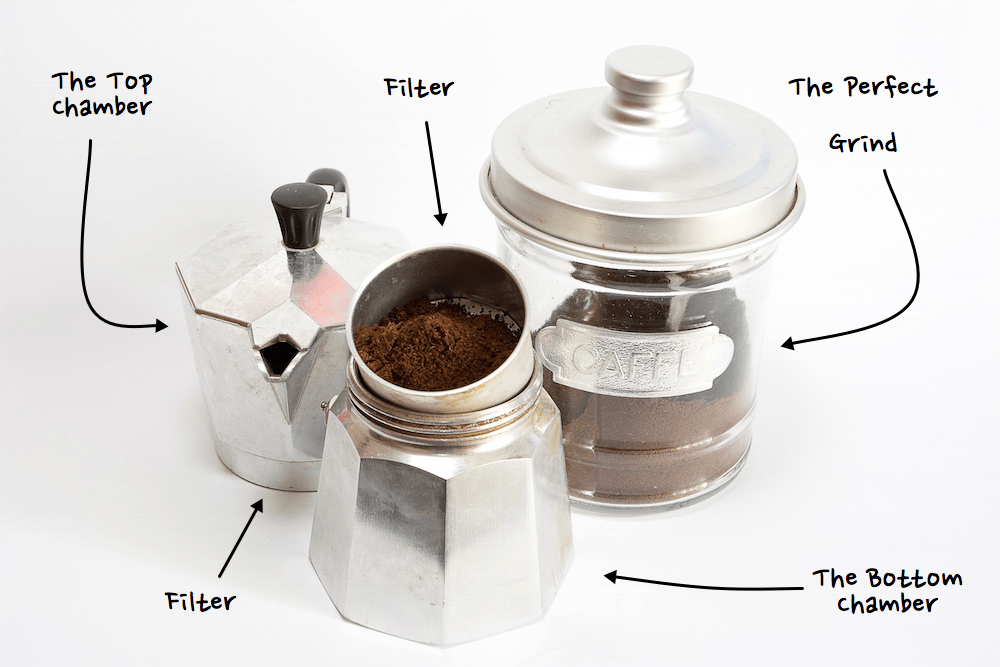

The
Perfect
Moka
Using the Italian Moka Pot
Step 1: Begin with a clean pot.
Always throughly clean all parts of the pot. Residual coffee can make a bitter brew.
Step 2: Grind coffee beans.
Needs to be coaser than expresso when grinding.
Step 3: Add water to pot.
Always use hot water to avoid burning coffee. Fill to just under saftey valve.
Step 4: Add ground coffee.
Fill filter to level with coffee but don't top down.
Step 5: Seal and place on burner.
Use caution when handling the pot as it might be hot. Place on burner quickly.
Step 6: Brew coffee.
Brew until it gurls, then remove and cool pot under cold tap water.
Step 7: Enjoy!
Pour into mug and add your favorite cream for a frothy latte.
Tip 1: Always clean your pot before storing.
Tip 2: Store pots together losely to avoid damage to the rubber seal.
Tip 3: Using premium coffee beans add more flavor.